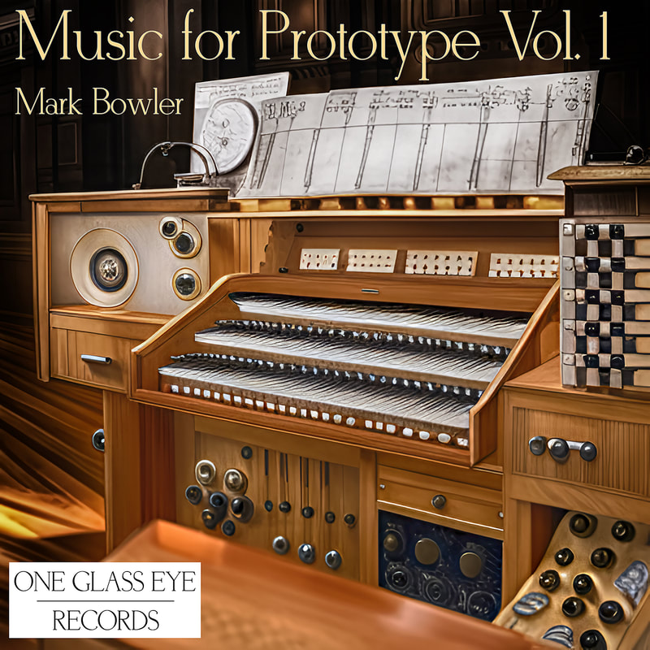

Listen to Music For Prototype Vol. 1 here
The house was relatively small, little more than a two-up two-down, but it was big enough for my needs and was in good condition despite being uninhabited for some time. After spending a couple of days unpacking and arranging the essentials, I decided to tackle the outbuilding, which was situated a short distance from the property in an established, but unnoteworthy garden that was itself larger than the footprint of the house.
When I was given my first and only viewing a few months earlier, the agent didn't have a key for the padlocked door to the windowless brick-built structure in the garden. She assured me that she had been inside and that the space was empty and dry. I could see for myself that the tiled roof was intact, but who knows with a building several decades old? It was a risk to commit without looking inside, but I imagined that the space would be perfect for conversion into a little music studio and workspace.
The old padlock broke easily with a pair of large bolt cutters I'd bought from a car boot sale several years earlier but had, until then, found no use for. Opening the solid oak door and expecting concrete and dank, I was astounded to find the walls, floor and rafters were clad with wood. Not a cheap laminate, but some variety of hardwood. It was dry, as I had been told it would be, and a thin layer of dust covered the floor and the large, covered object that stood slightly offset from the far-left corner.
The object was protected by a well-fitted faux leather cover. As I removed it, the not inconsiderable veneer of dust filled my face. Upon turning back, through settling dust and illuminated only by sunlight from that open door, I was awestruck to find myself looking at what was clearly a musical instrument, one both familiar and highly unusual. I had certainly never seen nor read a description of anything quite like what stood before me.
At first glance it was an organ with three manuals and foot pedals — and there the familiarity ended — set inside what I later found to be an exquisitely crafted wooden casing, which could only have been made by an expert cabinet maker. Built into the cabinet were a pair of speakers, one either side of an unusual set of solid-wood buttons and controls which parenthesised the keyboards in a vertical orientation.
Speakers, I knew, meant electricity. Flicking the switch on the socket resulted in a little pop, exactly as you would expect when turning on the power to an amplifier if the volume hadn't been turned down. After that, silence. I found myself surprised that there was no trace of electrical hum and wondered if I would be faced with disappointment when I attempted to create sound with the instrument.
I pressed a key on the middle manual and was amazed (and perhaps a little disappointed) to hear the sound of a piano, of a hammer hitting a string. Crystal clear, and not emanating from the speakers. A comically large sliding knob to the right of the manuals had a spectacular effect on the sound. In the position I found it, fully to the left, all three manuals produced a sound with the timbre of a pub piano in need of turning. Upon sliding the knob fully to the right, the speakers came alive with the sound of an organ.
What took my breath away was when I moved the sliding knob whilst continuing to play: one sound morphed seamlessly into the other. I was able to hear a more or less 'organ-y piano' or 'piano-y organ' depending on its position. Dumbfounded, I could only begin to imagine what effect the other controls, switches and panels might have.
The only hint at a backstory was the word PROTOTYPE written in precise pyrography on the upper left corner right-hand panel, in lettering approximately 3cm tall, but this posed more questions than it answered.
Needing to take a breath of fresh air, I stepped back into the early summer sunshine to consider what I had stumbled upon and now owned. Looking back at PROTOTYPE through a shaft of thick, sunlit, dust-filled air, I felt as though my life, over the course of what must have been only fifteen minutes, had been fundamentally changed. I began to wonder how I might methodically explore the instrument with a view, one day, to composing music for it.
Mailing List
Subscribe to my (very occasional) mailing list: